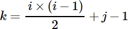
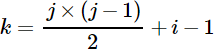
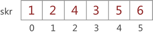
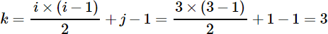
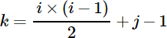
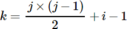
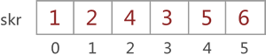
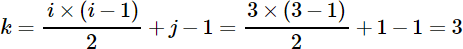
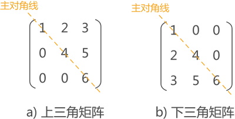
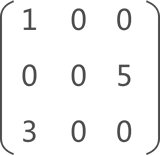

矩阵（稀疏矩阵）压缩存储（3种方式）
数据结构中，提供针对某些特殊矩阵的压缩存储结构。
这里所说的特殊矩阵，主要分为以下两类：
针对以上两类矩阵，数据结构的压缩存储思想是：矩阵中的相同数据元素（包括元素 0）只存储一个。

图 1 对称矩阵示意图
图 1 的矩阵中，数据元素沿主对角线对应相等，这类矩阵称为对称矩阵。
对称矩阵的实现过程是，若存储下三角中的元素，只需将各元素所在的行标 i 和列标 j 代入下面的公式：

存储上三角的元素要将各元素的行标 i 和列标 j 代入另一个公式：

最终求得的 k 值即为该元素存储到数组中的位置（矩阵中元素的行标和列标都从 1 开始）。
例如，在数组 skr[6] 中存储图 1 中的对称矩阵，则矩阵的压缩存储状态如图 3 所示（存储上三角和下三角的结果相同）：

图 3 对称矩阵的压缩存储示意图
注意，以上两个公式既是用来存储矩阵中元素的，也用来从数组中提取矩阵相应位置的元素。例如，如果想从图 3 中的数组提取矩阵中位于 (3,1) 处的元素，由于该元素位于下三角，需用下三角公式获取元素在数组中的位置，即：

结合图 3，数组下标为 3 的位置存储的是元素 3，与图 1 对应。
如图 4 所示，主对角线下的数据元素全部相同的矩阵为上三角矩阵（图 4a)），主对角线上元素全部相同的矩阵为下三角矩阵（图 4b)）。
对于这类特殊的矩阵，压缩存储的方式是：上（下）三角矩阵采用对称矩阵的方式存储上（下）三角的数据（元素 0 不用存储）。
例如，压缩存储图 4a) 中的上三角矩阵，矩阵最终的存储状态同图 3 相同。因此可以得出这样一个结论，上(下)三角矩阵存储元素和提取元素的过程和对称矩阵相同。
如图 5 所示，如果矩阵中分布有大量的元素 0，即非 0 元素非常少，这类矩阵称为稀疏矩阵。
压缩存储稀疏矩阵的方法是：只存储矩阵中的非 0 元素，与前面的存储方法不同，稀疏矩阵非 0 元素的存储需同时存储该元素所在矩阵中的行标和列标。
例如，存储图 5 中的稀疏矩阵，需存储以下信息：
由此，可以成功存储一个稀疏矩阵。
稀疏矩阵的压缩存储，数据结构提供有 3 种具体实现方式：
稀疏矩阵的三种存储结构，会利用后续的 3 篇文章做重点介绍。
这里所说的特殊矩阵，主要分为以下两类：
- 含有大量相同数据元素的矩阵，比如对称矩阵；
- 含有大量 0 元素的矩阵，比如稀疏矩阵、上（下）三角矩阵；
针对以上两类矩阵，数据结构的压缩存储思想是：矩阵中的相同数据元素（包括元素 0）只存储一个。
对称矩阵
图 1 对称矩阵示意图
图 1 的矩阵中，数据元素沿主对角线对应相等，这类矩阵称为对称矩阵。
矩阵中有两条对角线，其中图 1 中的对角线称为主对角线，另一条从左下角到右上角的对角线为副对角线。对称矩阵指的是各数据元素沿主对角线对称的矩阵。
结合数据结构压缩存储的思想，我们可以使用一维数组存储对称矩阵。由于矩阵中沿对角线两侧的数据相等，因此数组中只需存储对角线一侧（包含对角线）的数据即可。对称矩阵的实现过程是，若存储下三角中的元素，只需将各元素所在的行标 i 和列标 j 代入下面的公式：

存储上三角的元素要将各元素的行标 i 和列标 j 代入另一个公式：

最终求得的 k 值即为该元素存储到数组中的位置（矩阵中元素的行标和列标都从 1 开始）。
例如，在数组 skr[6] 中存储图 1 中的对称矩阵，则矩阵的压缩存储状态如图 3 所示（存储上三角和下三角的结果相同）：

图 3 对称矩阵的压缩存储示意图
注意，以上两个公式既是用来存储矩阵中元素的，也用来从数组中提取矩阵相应位置的元素。例如，如果想从图 3 中的数组提取矩阵中位于 (3,1) 处的元素，由于该元素位于下三角，需用下三角公式获取元素在数组中的位置，即：

上（下）三角矩阵

图 4 上(下)三角矩阵
图 4 上(下)三角矩阵
如图 4 所示，主对角线下的数据元素全部相同的矩阵为上三角矩阵（图 4a)），主对角线上元素全部相同的矩阵为下三角矩阵（图 4b)）。
对于这类特殊的矩阵，压缩存储的方式是：上（下）三角矩阵采用对称矩阵的方式存储上（下）三角的数据（元素 0 不用存储）。
例如，压缩存储图 4a) 中的上三角矩阵，矩阵最终的存储状态同图 3 相同。因此可以得出这样一个结论，上(下)三角矩阵存储元素和提取元素的过程和对称矩阵相同。
稀疏矩阵

图 5 稀疏矩阵示意图
图 5 稀疏矩阵示意图
如图 5 所示，如果矩阵中分布有大量的元素 0，即非 0 元素非常少，这类矩阵称为稀疏矩阵。
压缩存储稀疏矩阵的方法是：只存储矩阵中的非 0 元素，与前面的存储方法不同，稀疏矩阵非 0 元素的存储需同时存储该元素所在矩阵中的行标和列标。
例如，存储图 5 中的稀疏矩阵，需存储以下信息：
- (1,1,1)：数据元素为 1，在矩阵中的位置为 (1,1)；
- (3,3,1)：数据元素为 3，在矩阵中的位置为 (3,1)；
- (5,2,3)：数据元素为 5，在矩阵中的位置为 (2,3)；
- 除此之外，还要存储矩阵的行数 3 和列数 3；
由此，可以成功存储一个稀疏矩阵。
注意，以上 3 种特殊矩阵的压缩存储，除了将数据元素存储起来，还要存储矩阵的行数值和列数值，具体的实现方式后续会介绍 3 种，本节仅需了解矩阵压缩存储的原理。
矩阵压缩存储的 3 种方式
对于以上 3 种特殊的矩阵，对阵矩阵和上下三角矩阵的实现方法是相同的，且实现过程比较容易，仅需套用上面给出的公式即可。稀疏矩阵的压缩存储，数据结构提供有 3 种具体实现方式：
稀疏矩阵的三种存储结构，会利用后续的 3 篇文章做重点介绍。
关注公众号「站长严长生」，在手机上阅读所有教程，随时随地都能学习。内含一款搜索神器，免费下载全网书籍和视频。

微信扫码关注公众号